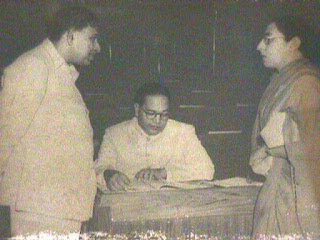

Early Life
Bhimrao Ramji Ambedkar (14 April 1891 – 6 December 1956) was an Indian jurist,
economist, social reformer and political leader who headed the committee drafting the Constitution of India from the
Constituent Assembly debates, served as Law and Justice minister in the first cabinet of Jawaharlal Nehru,
and inspired the Dalit Buddhist movement after renouncing Hinduism.
Ambedkar's ancestors had long worked for the army of the British East India Company, and his father served in the British Indian Army at the Mhow cantonment. Although they attended school, Ambedkar and other untouchable children were segregated and given little attention or help by teachers. They were not allowed to sit inside the class. When they needed to drink water, someone from a higher caste had to pour that water from a height as they were not allowed to touch either the water or the vessel that contained it. This task was usually performed for the young Ambedkar by the school peon, and if the peon was not available then he had to go without water; he described the situation later in his writings as "No peon, No Water". His original surname was Sakpal but his father registered his name as Ambadawekar in school, meaning he comes from his native village 'Ambadawe' in Ratnagiri district. His Marathi Brahmin teacher, Krishnaji Keshav Ambedkar, changed his surname from 'Ambadawekar' to his own surname 'Ambedkar' in school records.
Education
Post-secondary education
In 1897, Ambedkar's family moved to Mumbai where Ambedkar became the only untouchable enrolled at Elphinstone High School. In 1906,
when he was about 15 years old, he married a nine-year-old girl, Ramabai.
The match per the customs prevailing at that time was arranged by the couple's parents.
Studies at the University of Bombay
In 1907, he passed his matriculation examination and in the following year he entered Elphinstone College,
which was affiliated to the University of Bombay, becoming, according to him,
the first from his Mahar caste to do so.
Studies at Columbia University
In 1913, at the age of 22, Ambedkar was awarded a Baroda State Scholarship of £11.50 (Sterling) per month for three years under
a scheme established by Sayajirao Gaekwad III (Gaekwad of Baroda) that was designed to provide opportunities for
postgraduate education at Columbia University in New York City.
Studies at the London School of Economics
In October 1916, he enrolled for the Bar course at Gray's Inn,
and at the same time enrolled at the London School of Economics where he started working on a doctoral thesis. In June 1917,
he returned to India because his scholarship from Baroda ended. His book collection was dispatched on a different ship from the one he was on,
and that ship was torpedoed and sunk by a German submarine.
The Immortal Voice of Ambedkar
Political Career
In 1935, Ambedkar was appointed principal of the Government Law College, Bombay,
a position he held for two years. He also served as the chairman of Governing body of Ramjas College,
University of Delhi, after the death of its Founder Shri Rai Kedarnath.
Ambedkar published his book Annihilation of Caste on 15 May 1936.It strongly criticised Hindu orthodox religious leaders and the caste system in general,[61] and included "a rebuke of Gandhi" on the subject. Later, in a 1955 BBC interview, he accused Gandhi of writing in opposition of the caste system in English language papers while writing in support of it in Gujarati language papers.
Ambedkar served on the Defence Advisory Committee and the Viceroy's Executive Council as minister for labour. Before the Day of Deliverance events, Ambedkar stated that he was interested in participating: "I read Mr. Jinnah's statement and I felt ashamed to have allowed him to steal a march over me and rob me of the language and the sentiment which I, more than Mr. Jinnah, was entitled to use." He went on to suggest that the communities he worked with were twenty times more oppressed by Congress policies than were Indian Muslims; he clarified that he was criticizing Congress, and not all Hindus.
Ambedkar contested in the Bombay North first Indian General Election of 1952, but lost to his former assistant and Congress Party candidate Narayan Kajrolkar. Ambedkar became a member of Rajya Sabha, probably an appointed member. He tried to enter Lok Sabha again in the by-election of 1954 from Bhandara, but he placed third (the Congress Party won). By the time of the second general election in 1957, Ambedkar had died.
Drafting of India's Constitution
Gallery

